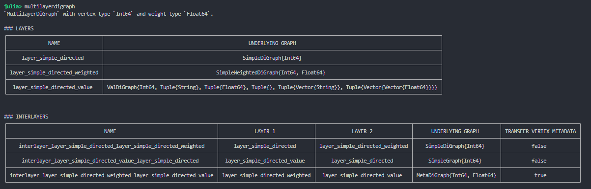

1.1 How is MultilayerGraphs.jl inspired by and built around Graphs.jl?
1.2 Traits usage.
2. Main design features;
3. Brief showcase.
4. Future developments;
Overview of Graphs.jl: How is MultilayerGraphs.jl inspired by and built around Graphs.jl?
Julia’s graph ecosystem is built around Graphs.jl;
Graphs.jl is thought to be extended by being built around a minimal set of APIs: (edges,Base.eltype,edgetype,has_edge,has_vertex,inneighbors,ne,nv,outneighbors,vertices,is_directed);
Once you have overloaded the above methods on YourGraphType (coming from YourGraphPackage), then you may use all Graphs.jl’s metrics and methods:
# Suppose we have the following abstract_graph types:abstract type abstract_graph endstruct simple_graph <: abstract_graph endstruct simple_directed_graph <: abstract_graph end
# Basically, traits are given via a type hierarchy:abstract type Directedness endstruct Directed <: Directedness endstruct Undirected <: Directedness end
# Graph types are assigned their respective trait:Directedness(::Type{simple_graph}) =Undirected()Directedness(::Type{simple_directed_graph}) =Directed()
# And finally dispatch can be implemented:functionadd_edge!(::Directed, ::abstract_graph, new_edge)# ...endfunctionadd_edge!(::Undirected, ::abstract_graph, new_edge)# ...end
# So that the API can look like:add_edge!(g::simple_graph, new_edge) =add_edge!(Directedness(g), g, new_edge)
Overview of Graphs.jl: Traits usage #3
Traits stratify types horizontally while (single) inheritance stratifies vertically (i.e. creates a type hierarchy).
Practice
In this section, we are going to see:
1. Overview of Graphs.jl
Main design features:
2.1 Sub-ecosystem;
2.2 Standalone graph types > graph wrappers;
2.3 Main structs.
3. Brief showcase.
4. Future developments;
Main design features: Sub-ecosystem
MultilayerGraphs.jl aims to be a sub-ecosystem of Graphs.jl, specialized in multilayer graphs;
This is made possible by the multiple inheritance as explained earlier:
Hierarchical relations are given by single inheritance (e.g. MultilayerGraph <: AbstractMultilayerGraph);
Variants of the same type of multilayer graph are distinguished by traits (e.g. MultilayerDiGraph is given the IsDirected trait while MultilayerGraph is not).
Main design features: Standalone graph types > graph wrappers
Many attempts were made to implement MultilayerGraphs.jl as a wrapper package;
Implementing a wrapper package looks easier than a full implementation at first…
…but it becomes nightmare-ish when one needs to modify graphs due to function duplication and consistency checks.
# Import necessary dependenciesusingDistributions, Graphs, SimpleValueGraphsusingMultilayerGraphs# Set the number of nodesconst n_nodes =100# Create a list of nodesconst node_list = [Node("node_$i") for i in1:n_nodes]# Create a simple directed layern_vertices =rand(1:100) # Number of vertices layer_simple_directed =layer_simpledigraph( # Layer constructor :layer_simple_directed, # Layer namesample(node_list, n_vertices; replace=false), # Nodes represented in the layerTruncated(Normal(5, 5), 0, 20), # Indegree sequence distribution Truncated(Normal(5, 5), 0, 20) # Outdegree sequence distribution)# Create a simple directed weighted layern_vertices =rand(1:n_nodes) # Number of vertices n_edges =rand(n_vertices:(n_vertices * (n_vertices -1) -1)) # Number of edges layer_simple_directed_weighted =layer_simpleweighteddigraph( # Layer constructor :layer_simple_directed_weighted, # Layer namesample(node_list, n_vertices; replace=false), # Nodes represented in the layer n_edges; # Number of randomly distributed edges default_edge_weight=(src, dst) ->rand() # Function assigning weights to edges )# Create a simple directed value layern_vertices =rand(1:n_nodes) # Number of vertices n_edges =rand(n_vertices:(n_vertices * (n_vertices -1) -1)) # Number of edges default_vertex_metadata = v -> ("vertex_$(v)_metadata",) # Vertex metadata default_edge_metadata = (s, d) -> (rand(),) # Edge metadata layer_simple_directed_value =Layer( # Layer constructor:layer_simple_directed_value, # Layer namesample(node_list, n_vertices; replace=false), # Nodes represented in the layer n_edges, # Number of randomly distributed edgesValDiGraph( SimpleDiGraph{Int64}(); vertexval_types=(String,), vertexval_init=default_vertex_metadata, edgeval_types=(Float64,), edgeval_init=default_edge_metadata, ),Float64; default_vertex_metadata=default_vertex_metadata, # Vertex metadata default_edge_metadata=default_edge_metadata # Edge metadata )# Create a list of layers layers = [layer_simple_directed, layer_simple_directed_weighted, layer_simple_directed_value]# Create a simple directed interlayern_vertices_1 =nv(layer_simple_directed) # Number of vertices of layer 1n_vertices_2 =nv(layer_simple_directed_weighted) # Number of vertices of layer 2n_edges =rand(1:(n_vertices_1 * n_vertices_2 -1)) # Number of interlayer edges interlayer_simple_directed =interlayer_simpledigraph( # Interlayer constructor layer_simple_directed, # Layer 1 layer_simple_directed_weighted, # Layer 2 n_edges # Number of edges )# Create a simple directed meta interlayer n_vertices_1 =nv(layer_simple_directed_weighted) # Number of vertices of layer 1n_vertices_2 =nv(layer_simple_directed_value) # Number of vertices of layer 2n_edges =rand(1:(n_vertices_1 * n_vertices_2 -1)) # Number of interlayer edges interlayer_simple_directed_meta =interlayer_metadigraph( # Interlayer constructor layer_simple_directed_weighted, # Layer 1 layer_simple_directed_value, # Layer 2 n_edges; # Number of edges default_edge_metadata=(src, dst) -># Edge metadata (edge_metadata="metadata_of_edge_from_$(src)_to_$(dst)",), transfer_vertex_metadata=true# Boolean deciding layer vertex metadata inheritance)# Create a list of interlayers interlayers = [interlayer_simple_directed, interlayer_simple_directed_meta]# Of course all methods such as add/rem_vertex!, add/rem_edge! work as expected on Layers and Interlayers# Create a simple directed multilayer graphmultilayerdigraph =MultilayerDiGraph( # Constructor layers, # The (ordered) collection of layers interlayers; # The manually specified interlayers# The interlayers that are left unspecified # will be automatically inserted according # to the keyword argument below default_interlayers_structure="multiplex"# The automatically specified interlayers will have only diagonal couplings)# Layers and interlayer can be accessed as properties using their namesmultilayerdigraph.layer_simple_directed_valuemultilayerdigraph.interlayer_layer_simple_directed_layer_simple_directed_weighted # Name is complicated since it was automatically assigned. Whole interlayers chan be automatically specified.# Create a node new_node_1 =Node("new_node_1")# Add the node to the multilayer graph add_node!(multilayerdigraph, new_node_1)# Create a vertex representing the node new_vertex_1 =MV( # Constructor (alias for "MultilayerVertex") new_node_1, # Node represented by the vertex:layer_simple_directed_value, # Layer containing the vertex ("new_metadata",) # Vertex metadata )# Add the vertex add_vertex!( multilayerdigraph, # MultilayerDiGraph the vertex will be added to new_vertex_1 # MultilayerVertex to add)# Create another node in another layer new_node_2 =Node("new_node_2")# Create another vertex representing the new nodenew_vertex_2 =MV(new_node_2, :layer_simple_directed_value)# Add the new vertexadd_vertex!( multilayerdigraph, new_vertex_2; add_node=true# Add the associated node before adding the vertex)# Create an edge new_edge =MultilayerEdge( # Constructor new_vertex_1, # Source vertex new_vertex_2, # Destination vertex ("some_edge_metadata",) # Edge metadata )# Add the edge add_edge!( multilayerdigraph, # MultilayerDiGraph the edge will be added to new_edge # MultilayerVertex to add)# Compute the global clustering coefficientmultilayer_global_clustering_coefficient(multilayerdigraph) # Compute the overlay clustering coefficientoverlay_clustering_coefficient(multilayerdigraph)# Compute the multilayer eigenvector centrality eigenvector_centrality(multilayerdigraph)# Compute the multilayer modularity modularity( multilayerdigraph,rand([1, 2, 3, 4], length(nodes(multilayerdigraph)), length(multilayerdigraph.layers)))
Brief showcase: Pretty console prints

Practice
In this section, we are going to see:
1. Overview of Graphs.jl
2. Main design features;
3. Brief showcase.
Future developments:
4.1 Systematize the sub-ecosystem interface;
4.2 Implement dimensions of multiplexity (aspects);
4.3 Implement more graph algorithms;
4.4 Implement more functionalities.
Future developments: Systematize the sub-ecosystem interface
Desiderata:
Agree on a set of APIs the external contributor should implement, and allow this to happen by restructuring the code;
Systematize the matter in a dedicated section of the documentation.
Future developments: Implement dimensions of multiplexity (aspects)
Most urgent contribution:
Allow to have more Layers on the same dimension of multiplicity;
Some related technical ToDos are:
Transition from a Vector{Layer} to an OrderedDict{String, Vector{Layer}} to store Layer (descriptors) inside the multilayer graph;
Implement an add_aspect! function;
Modify add_layer! so that it also requires the aspect the Layer should be assigned to;
Implications on representations?
Future developments: Implement more graph algorithms
![]()